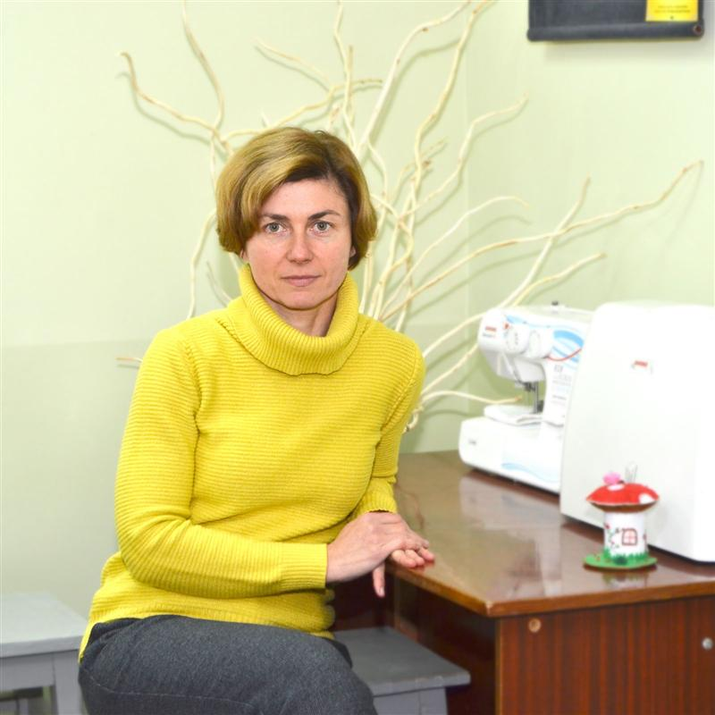
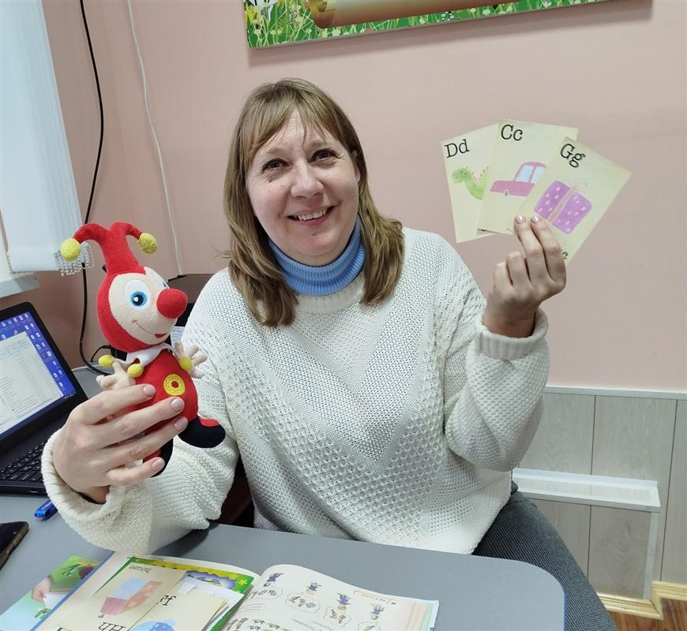
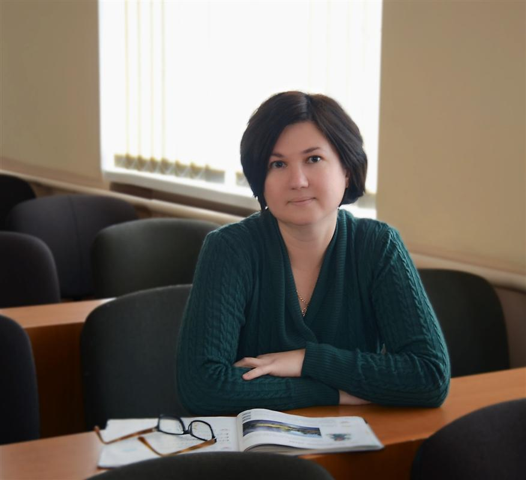
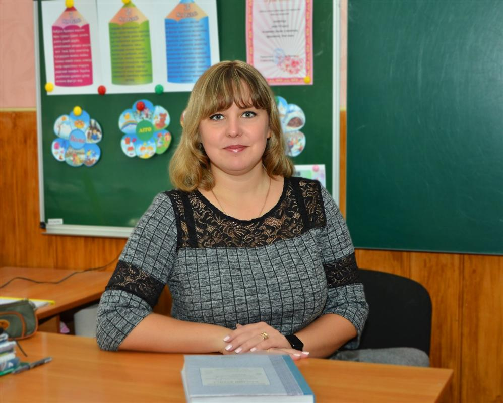
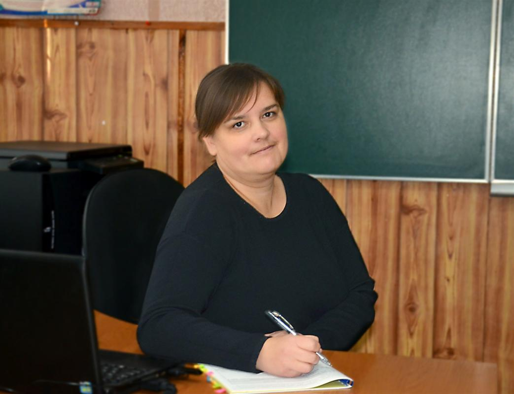
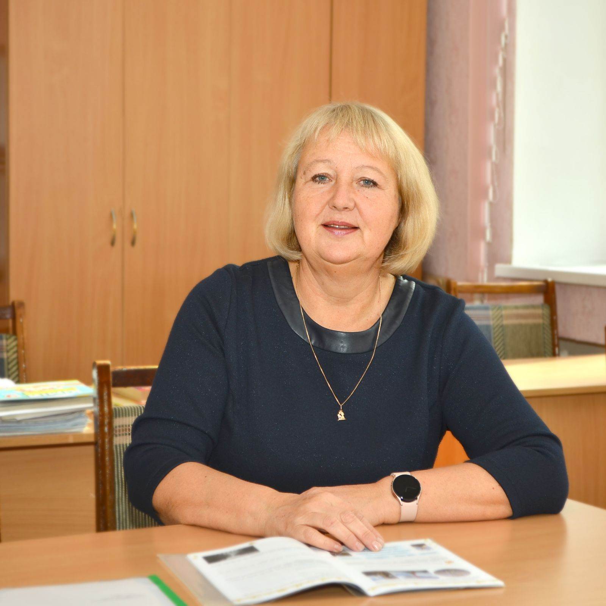
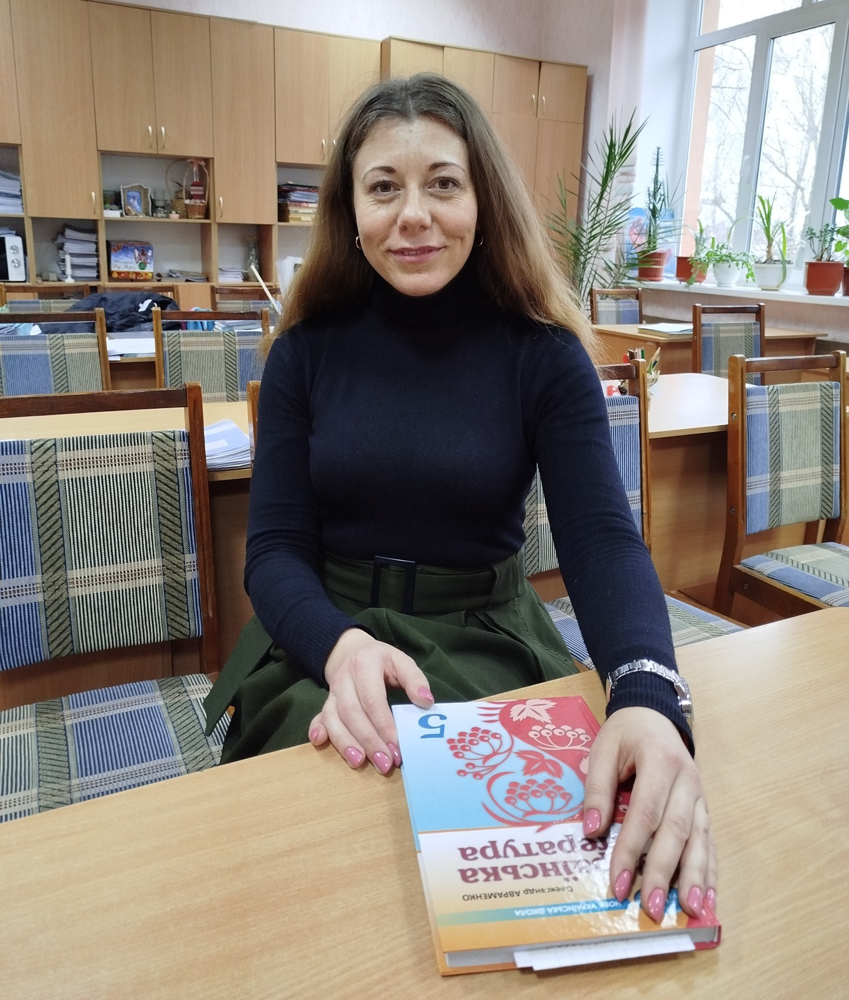

Професійна спільнота вчителів суспільно-гуманітарних наук

Бала Ірина Володимирівна
Вчитель історії
Спеціаліст вищої категорії
Педагогічне звання "Старший учитель"
Стаж роботи: 23 роки

Копил Наталія Едгартівна
Вчитель англійської мови
Спеціаліст І категорії
Стаж роботи: 24 роки

Литвих Тетяна Володимирівна
Вчитель зарубіжної літератури
Спеціаліст ІІ категорії
Стаж роботи: 4 роки

Мельник Лілія Юріївна
Вчитель англійської мови
Спеціаліст І категорії
Стаж роботи: 12 років

Помаз Вікторія Григорівна
Вчитель української мови та літератури
Спеціаліст І категорії
Стаж роботи: 16 років

Сафронова Ірина Олександрівна
Вчитель історії, правознавства
Спеціаліст вищої категорії
Учитель-методист
Стаж роботи: 42 роки

Шовкопляс Людмила Анатоліївна
Вчитель української мови та літератури
Спеціаліст І категорії
Стаж роботи: 8 років

Юрченко Аліна Сергіївна
Вчитель української мови та літератури
Спеціаліст вищої категорії
Учитель-методист
Стаж роботи: 22 роки